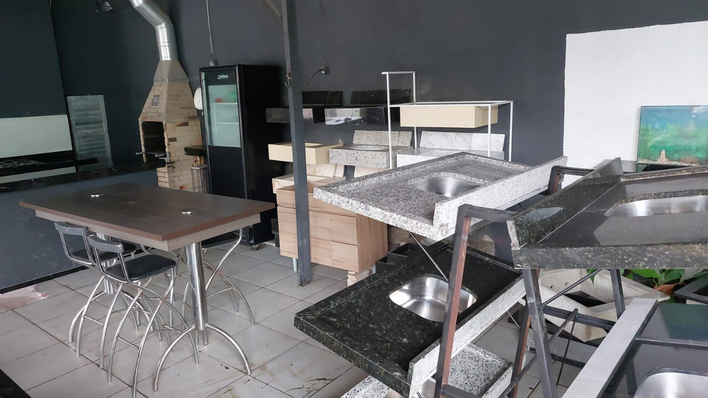
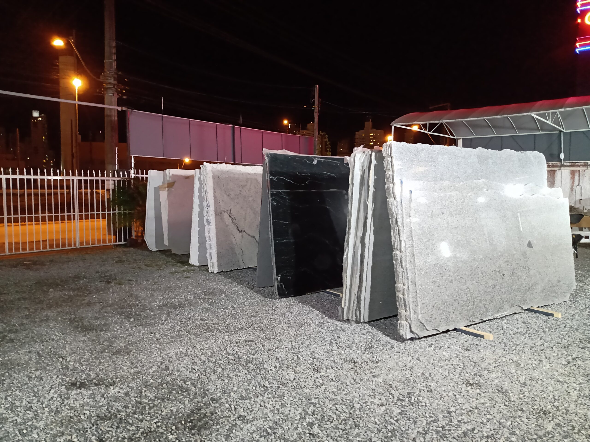

Do bloco ao acabamento final
Selecionamos materiais, executamos cortes com precisão e entregamos peças pensadas para durar, valorizar e funcionar no dia a dia.
A Atelier das Rochas une variedade de materiais, execução artesanal e atendimento próximo para criar cozinhas, lavatórios, pisos, soleiras e peças especiais em mármores e granitos. Tudo com produção sob medida, pronta entrega e compromisso real com sustentabilidade.

Selecionamos materiais, executamos cortes com precisão e entregamos peças pensadas para durar, valorizar e funcionar no dia a dia.
Somos uma empresa que trabalha com variedade de materiais, profissionais artesãos e um olhar atento para a sustentabilidade. Essa combinação transformou a Atelier das Rochas em referência para clientes e colaboradores que buscam qualidade, confiança e acabamento de alto padrão.

Trabalhamos com produção personalizada e peças que atendem desde acabamentos pontuais até ambientes completos, com foco em durabilidade, presença visual e instalação assertiva.
Superfícies sob medida para cozinhas residenciais e comerciais, com acabamento alinhado ao projeto.
Ver soluçõesPeças com desenho limpo, sob medida e com visual sofisticado para banheiros, lavabos e espaços comerciais.
Explorar categoriasDetalhes que fazem diferença no acabamento final de portas, janelas, escadas e áreas externas.
Entender aplicaçõesPeças resistentes ao uso intenso e pensadas para integrar estética, facilidade de limpeza e presença marcante.
Ver referênciasRecebemos a necessidade, orientamos materiais e ajudamos a transformar a ideia em uma solução viável.
Combinamos estética, resistência e funcionalidade para indicar a pedra ideal para cada aplicação.
Da usinagem ao acabamento final, o foco é entregar peças com precisão, leitura visual forte e bom encaixe.

A Atelier das Rochas reforça sua imagem digital mostrando práticas sustentáveis, certificações e uma postura responsável na relação com materiais, processos e clientes. Isso fortalece a marca e gera mais confiança para quem está decidindo onde investir.
O site valoriza o que a marca já possui de mais forte: acervo próprio, estrutura física, matéria-prima e capacidade de entregar peças sob medida com assinatura visual.
Se você busca uma marmoraria em Balneário Camboriú com produção sob medida, pronta entrega e uma marca comprometida com qualidade e sustentabilidade, fale com a Atelier das Rochas.